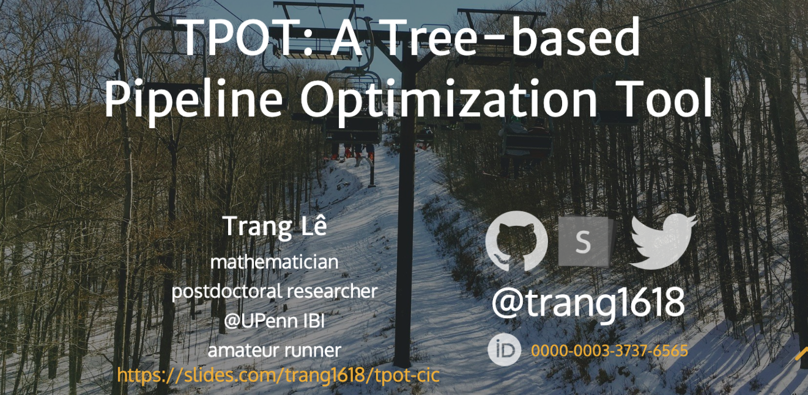

Tree-based Pipeline Optimization Tool (TPOT) is an automated machine learning tool that helps the data scientist find the optimal model pipeline for their prediction problem. Using genetic programming (GP), TPOT explores different pipelines (sequences of feature selectors, model classifiers, etc.) and recommends one with optimal cross-validated score after a specified number of generations.
Here are some TPOT-related papers{{%sn%}}Some others: Evaluation of a Tree-based Pipeline Optimization Tool for Automating Data Science, Toward the automated analysis of complex diseases in genome-wide association studies using GP{{%/sn%}} that will give you a quick glance at TPOT. Please let me know if you find other useful ones I should add here.
template and FeatureSetSelectorWhile current version of TPOT is already quite user friendly (especially compared to other autoML tools out there), I figured a list of common tips and tricks may be helpful to new users. Please let me know if I miss anything or if you have additional questions you’d like to ask. Here we go!
TPOT has greatly extensive documentation at http://epistasislab.github.io/tpot/, so I would start there. You will find on that site the instruction for installation and example code for a few classification and regression problems. These examples are as simple as
from tpot import TPOTClassifier
from sklearn.datasets import load_iris
from sklearn.model_selection import train_test_split
import numpy as np
seed = 42
iris = load_iris()
X_train, X_test, y_train, y_test = train_test_split(iris.data.astype(np.float64),
iris.target.astype(np.float64), train_size=0.75, test_size=0.25, random_state=seed)
tpot = TPOTClassifier(generations=5, population_size=50, verbosity=2, random_state=seed)
tpot.fit(X_train, y_train)
print(tpot.score(X_test, y_test))
tpot.export('tpot_iris_pipeline.py')The last line of this block code exports the tpot_iris_pipeline.py file.
Caution! We need to specify the same seed for the random_state argument in this train_test_split() and TPOTClassifier() as the above code chunk did.
This way, the train_test_split function in the exported file tpot_iris_pipeline.py will have the same random_state argument as in the originally split.
Of course, if you’re using a completely independent dataset for validation, this won’t be an issue.
Yes, you may report an issue at TPOT’s GitHub repository. Also, if you would like to contribute (e.g. fix a bug), you might find the contributing guidelines helpful.
TPOT includes most operators (transformers, feature selectors, classifiers and regressors) from scikit-learn and XGBoost. For example, in classification problems, all the operators are included here which also has the details on the ranges for corresponding hyperparameters. See the parent directory for other operators used for, say, regression problems.
Definitely! You can include only your favorite operators or remove time-consuming operators by modifying the config_dict parameter in the TPOTClassifier or TPOTRegression function. More details here.
Yup!
There are actually multiple ways to do this.
You can reduce the config_dict argument to your own classifier as described above.
For example, to tune a random forest model:
tpot_config = {
'sklearn.ensemble.RandomForestClassifier': {
'n_estimators': [1000],
'criterion': ["gini"],
'max_features': np.arange(0.05, 1.01, 0.1),
'min_samples_split': range(2, 21),
'min_samples_leaf': range(1, 21),
'bootstrap': [True, False]
}
}
tpot = TPOTClassifier(generations=5, population_size=20, verbosity=2,
config_dict=tpot_config)Also, with a customized config_dict, you can define the parameter grid however you want.
Another (simpler) way to tune your hyperparameters for a classifier or regressor is to use template:
For example, if you want to vary a random forest’s hyperparameters in default range, you can specify template = "RandomForestClassifier".
You can of course add to template other operators such as a feature selector.
This is a little bit trickier, but yes, you can, as long as your functions follow the scikit-learn syntax. Please see here and here for syntax examples of scikit-learn transformers and classifiers, respectively.
Default for scoring regression in TPOT is negative mean squared error. Therefore, if you want to maximize \(R^2\) instead, you’ll have to modify the objective function via the scoring argument. Here is how.
Note that you can also define your own scoring function!
Yes, please see TPOT API.
If you allow your config_dict parameter to contain Selector or FeatureSetSelector, the exported pipeline may look something like this:
exported_pipeline = make_pipeline(
SelectPercentile(score_func=f_classif, percentile=58),
OneHotEncoder(minimum_fraction=0.2, sparse=False, threshold=10),
GradientBoostingClassifier(learning_rate=0.01, max_depth=9, max_features=0.1, min_samples_leaf=2, min_samples_split=19, n_estimators=100, subsample=0.8)
)Then, to get the selected features, you can utilize the get_support() function:
I would use Eli accompanied with the exported pipeline to compute the permutation importance score. Here are a few lines of example code:
from eli5.sklearn import PermutationImportance
model = exported_pipeline.fit(training_features, training_target)
perm = PermutationImportance(model, n_iter=100).fit(training_features, training_target)
feat_imp = perm.feature_importances_Alternatively, you may want to try the permutation_importance() function in the under-development version of scikit-learn.
Oooh… This is a tricky one. Let’s walk through a few steps:
random_state in your train_test_split? Or better yet, np.random.seed() at the beginning of your notebook?random_state in your TPOTClassifier?set() function somewhere in the notebook? Sets are unordered, and so the elements are randomly permuted.Please report an issue if you still can’t reproduce the results after these checks.
Evolutionary algorithms are generally not fast. However, there are a few ways you can try to speed up the training of TPOT:
template = "FeatureSetSelector-Selector-Transformer-Classifier"{{%sn%}}Note that you won’t get very complicated pipelines, for better or worse. {{%/sn%}}n_jobs = -1 in your TPOTClassifier() function to use as many cores as available on your machineWhile this is slightly outside of the scope of TPOT, I’ll go ahead and answer it here.
This is straightforward if your final model supports probability prediction.
Otherwise, we can use probability calibration, which can easily be done with scikit-learn’s CalibratedClassifierCV, to obtain the probabilities on the test set.
Here are a few lines of example code:
I have given a few TPOT introduction talks. You may find the overview slides helpful. Cheers!
